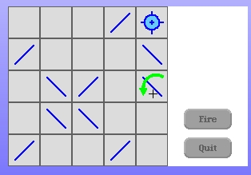
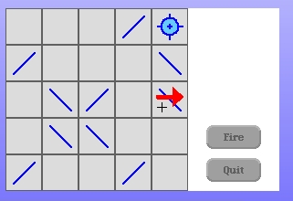
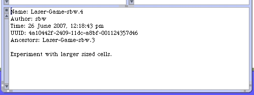

The cells look good after we scaled-up our cell extent. However the arrow hints appear to be trigger based upon old cell sizes.
We need to change 1 class method on CellRenderer. Here is the changed code.
insideRegionExtent
^self cellExtent - 20
Instead of the hard-coded offset to determine the size of the inside region we calculate a result based upon the cell size.
The rotate hint arrow calculations are broken with the larger scaled cell. Here is the modified CellClickRegionRotateClockwise #containsPoint: class method.
containsPoint: aPoint
^aPoint y <= (CellRenderer cellExtent y)
The CellClickRegionRotateCounterClockwise #containsPoint: class method also needs to be modified.
containsPoint: aPoint
^aPoint y > (CellRenderer cellExtent y)
The #yForHeadingDownLineWith class method on the CellClickRegionInside class also needs to be modified to account for the change in cell size.
yForHeadingDownLineWith: x
^CellRenderer cellExtent x - x
With this change you can move your mouse around inside the cell and the arrow hint detection seems to be better.
The arrows themselves don't seem as nicely positioned as we would like. However I'm not going to address that now. The problem is likely related to how we draw the arrows on the arrow forms. We'll make improvements to the appearance of our arrows later.
Save a new version in Monticello again and save your image at this breaking point.
